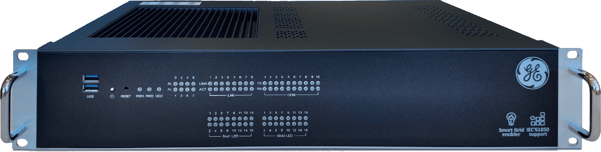
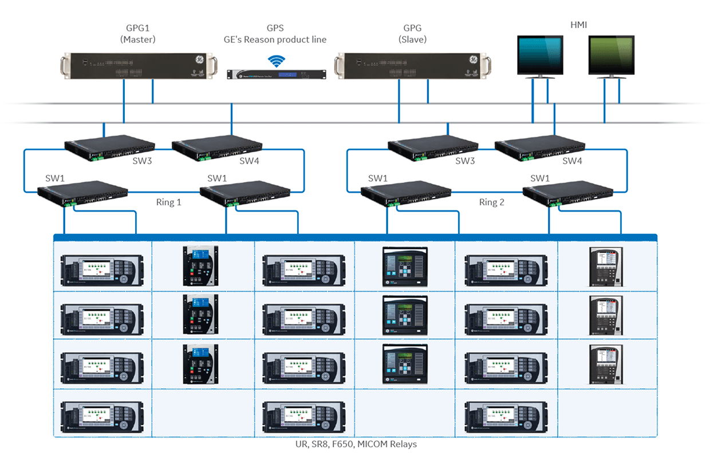
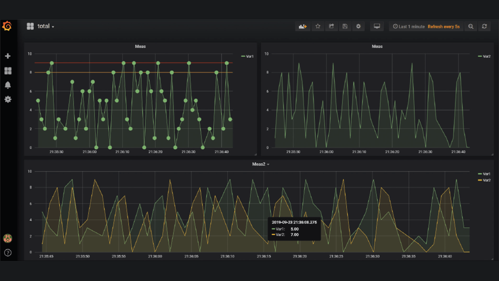

GE GPG 電驛監控與自動化解決方案
以進階自動化應用 (AAA) 打造更具韌性、安全且智慧的現代電網

電力系統的
數位轉型挑戰
數位化浪潮與挑戰
現代電廠正走向數位化，利用IED以及各種智慧儀表來大幅提升整體營運效率。
隨著再生能源的快速增加與系統架構的複雜化，電力客戶比以往更需要具備高度韌性、強大安全性且具預測能力的資產監控方案。
全方位整合
GPG 是極致單一的軟體平台，完美整合了資料配置、通訊集中、HMI 檢視器與進階邏輯大幅降低系統維護成本
預測型訊號基礎
平台提供強大的數據收集與遠端進階監控能力，為預測型訊號 (Predictive signals) 與遠端配置提供絕對必要的關鍵數據
極致效能與即時性
實時作業系統 (VxWorks) 即使處理龐大複雜的演算法，其循環時間也能達到 Microseconds等級
大規模監控架構
單一系統即可輕鬆監控超過 1000 個以上的智慧電子裝置 (IEDs) 並支援自定義視圖，提供全面且零死角的系統掌握度。
波形紀錄自動化 (eRMT)
系統能自動擷取並歸檔錄波Oscillography，同時完整儲存事件紀錄、測量數據與控制設定，以便工程師進行後續深度分析。
強大的電驛整合能力
支援將第三方電驛無縫整合，符合IEC 61850、DNP 3.0、Modbus、OPC UA等通訊協定，通過台電互操作性測試，大幅增強監控的廣度與系統的設備相容性，不受單一品牌限制。

網路安全
-
多層次網路安全防護
提供 TLS 1.2 高強度加密通訊、基於角色的存取控制 (RBAC) 以及作業系統寫入保護，徹底確保監控系統免受任何形式的惡意威脅。
-
國際認證
符合 IEC 61850-3 與 IEEE 1613 國際標準，專為變電站嚴苛環境設計
-
備援機制
支援 Hot-Hot 與 Hot-Standby 備援模式
卓越的視覺化管理
直觀的監控介面
GPG Viewer 提供頂尖的圖形化用戶界面，全面支援向量圖形，提供高達 1600x1200 分辨率的超清晰視圖，並具備靈活的縮放與平移功能。
實時互鎖視覺化
系統能自動生成互鎖狀態的圖形表示並實時動態刷新，操作員能一目了然地精確掌握全變電站狀況，顯著提升整體操作安全性。
動態趨勢與跨平台
將實時測量與歷史波形完美結合分析，並支援報表導出。內建 Web 伺服器與雲端連線，可隨時透過任何裝置的瀏覽器實時監控

-
降低成本
簡約美觀設計
-
強大擴充性
從單一間隔到大型工業應用，皆能靈活調整規模
-
視覺化管理
直觀操作介面，搭配明顯顏色區別以達成預測及告警
-
易於使用
簡易的設備連接流程與 HMI 介面創建，縮短工程實施時間